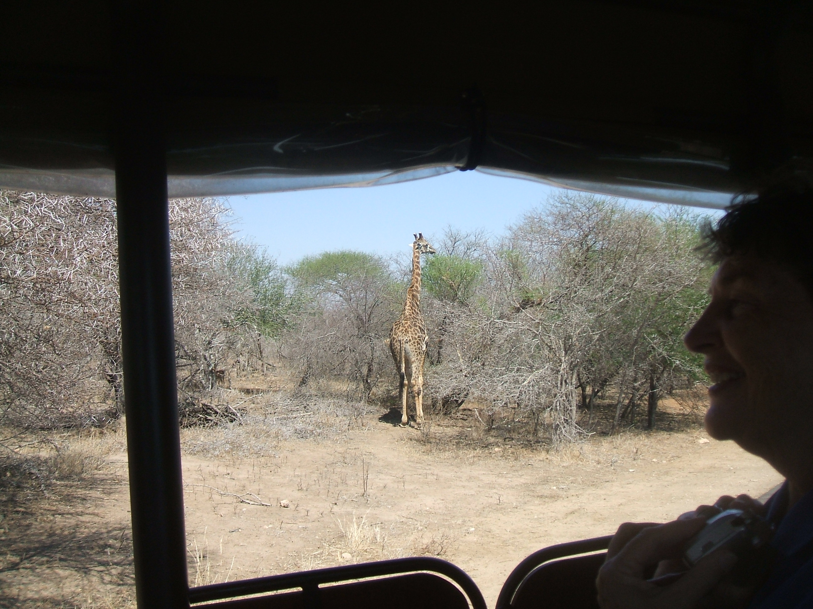
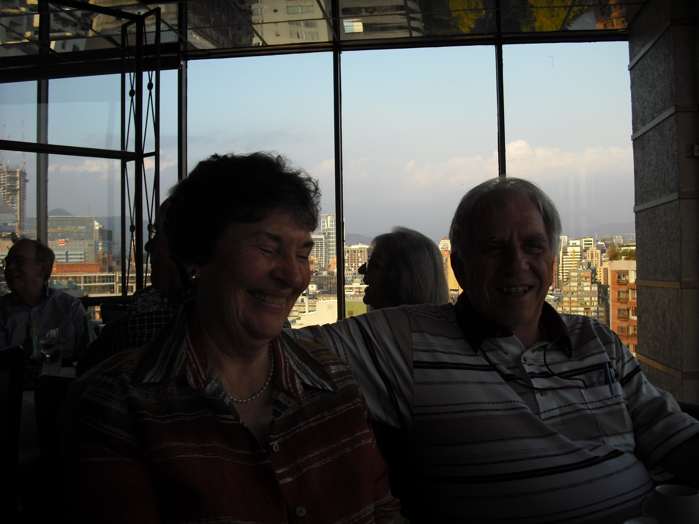
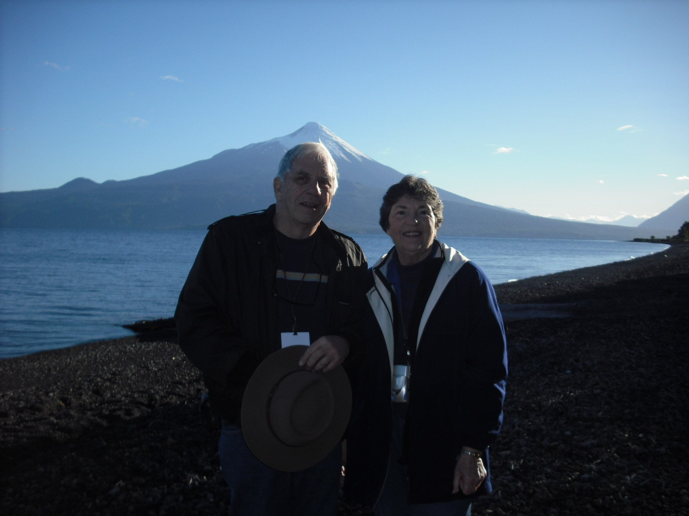
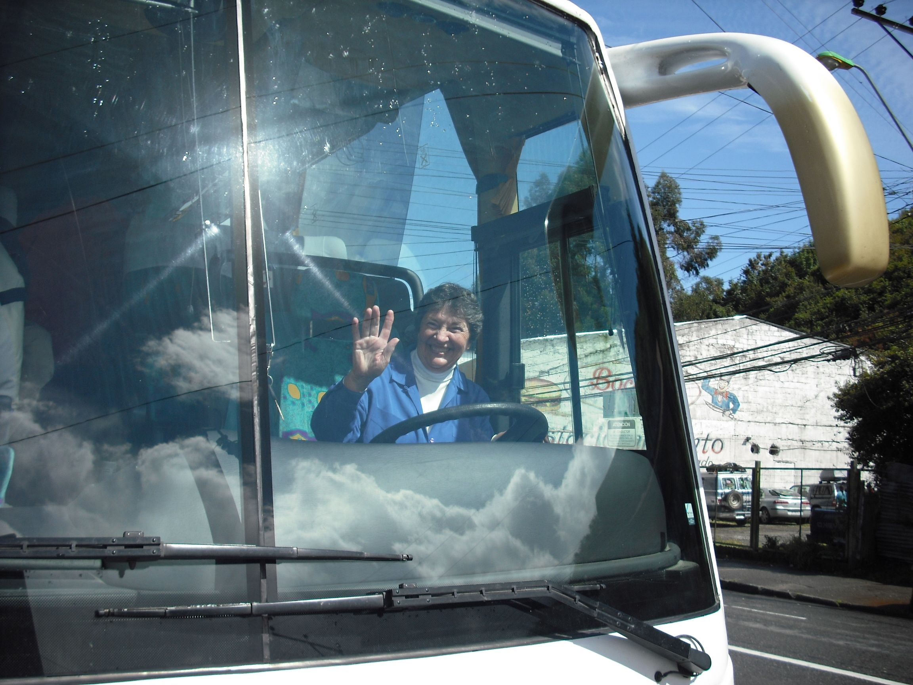
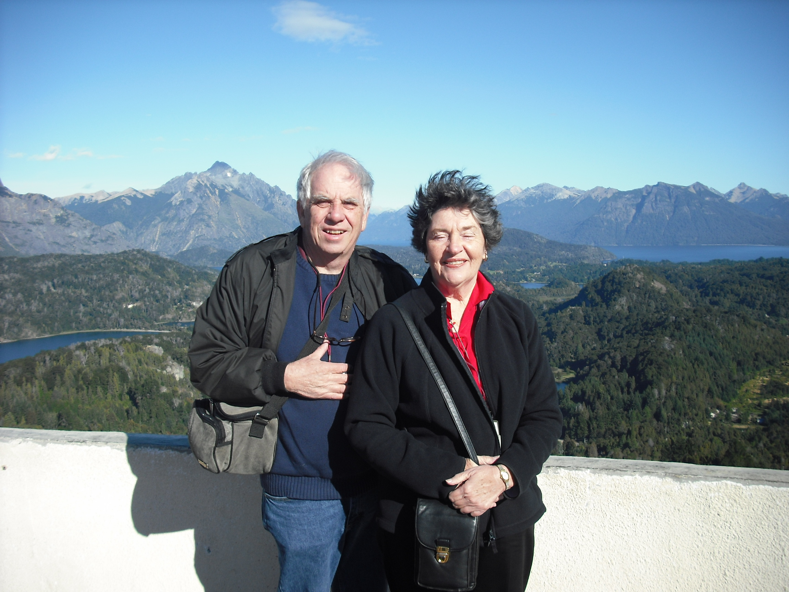
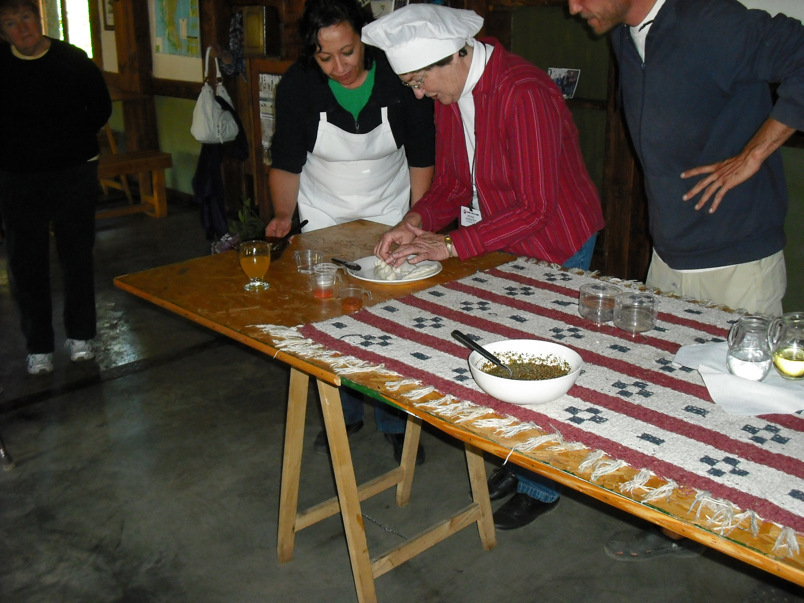

Kenneth and Bonnie Kornstett 2016
Received this email from Ken Kornstett March 16, 2016. Ken sent an email update previously in 2001. Here's a link to it: Ken Kornstett 2001I thought some people may be interested in an update on Bonnie and myself. I sent an earlier email to John McAdams in 2001. Since then, we have traveled to both South Africa (2008) and South America (2009). That makes 6 of the 7 continents. We thought about going to Antarctica, but decided against it. Traveling is a hassle anymore.
Enclosed are a few pictures from those two trips:
- at a small border crossing back into South Africa.
- Bonnie and giraffe in Kruger Park, South Africa.
- Bonnie and I in a restaurant in Chile having a great time (DSCF0069.jpg)
- Bonnie and I in front of a volcano just before a 12 hour trip over the Andes by 3 boats into Argentina (DSCF0278.jpg). A volcano erupted 60 miles south the night before.
- Bonnie driving a bus (DSCF0230.jpg). People did a double take when they saw her. (Although she finished obtaining her pilot's license after we returned home in the early 80s.)
- In a windy place (DSCF0473.jpg) in Argentina.
- Bonnie showing the cook at a sheep ranch in Argentina how she finishes off fried pies (DFSCF0423.jpg)
We thoroughly enjoyed Kruger Park in South Africa, but we were surprised by and liked both Chile and Argentina. We now travel via books.
Yes, we finally made it to all 50 states. At the time of that 2001 letter, we had not been to Wisconsin and Alaska. We made it a couple of years later.
In the last five years, I have written 10 radio astronomy articles. One was an application note for Parallax (microcomputers) and the other nine were for the Society of Amateur Radio Astronomers journal. Last month, I published an ebook on that tractor that I described painting in that 2001 email. Just type my name into the Amazon website and it will come up. I have a few more ebooks in the pipeline to be published soon. Believe it or not, I got into taking critter pictures with a trail camera (it will be the next ebook for Amazon). (See the last enclosed picture 20 Aug 10 Doe with twin fawns for an example picture.)
We still live on the same farm. We quit selling blueberries to Walmart because they almost worked us to death. They kept wanting more every time we made a delivery to the store. We keep busy trying to make the farm look like someone lives here (mowing grass, weedeating, chasing cows, burning brush piles, etc.) Like others, we are slowing down each year.
I still read and both Bonnie and I are both on our 39th reading of the Bible. We have self published about 40 booklets.
I look at the ESY website every month.
Still enjoying retirement on the farm.
Ken & Bonnie Kornstett
Photos

At a border crossing
Giraffe
DSCF0069
DSCF0278
DSCF0230
DSCF0473
DSCF0423
.JPG)
20 Aug 10 doe with twin fawns

ESY Ray